Comprehension passage - the questions below it refer to this
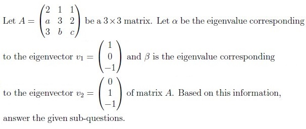
Q1SA3 marks
Find the value of α + 2β.
Q2MSQ4 marksselect all that apply
Which of the following options is/are true ?
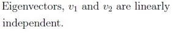
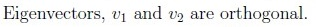
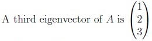
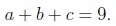
Comprehension passage - the questions below it refer to this
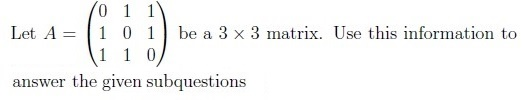
Q3MSQ4 marksselect all that apply
Which of the following options is/are true?
A is a symmetric matrix.
A is a diagonal matrix.
A is orthogonally diagonalizable.
Eigenvalues of A are -1, -1 and 2.
Q4MSQ3 marksselect all that apply
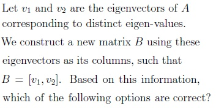
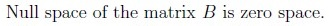
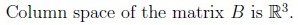
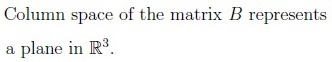
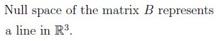
Q5MSQ4 marksselect all that apply
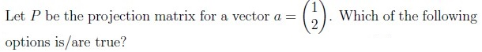
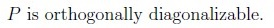
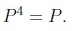
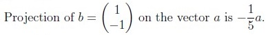
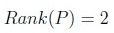
Q6MCQ4 marks
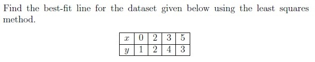
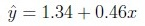
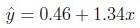
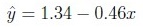
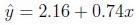
Q7MCQ4 marks
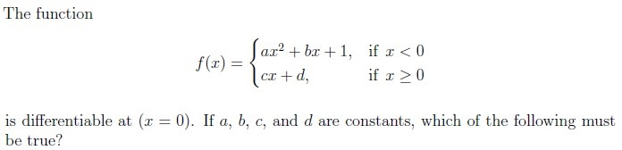
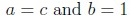
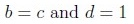
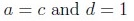
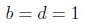
Q8MCQ3 marks
Which of the following statements is true for a function f(x, y) that is differentiable at a point (a, b)?
The directional derivative exists in every direction.
The directional derivative is the same in every direction.
The directional derivative can only be calculated along the axes.
The directional derivative does not exist.
Q9MCQ3 marks
Which of the following functions cannot be approximated linearly around x = 0?
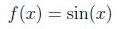
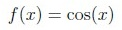
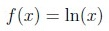
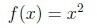
Q10SA3 marks
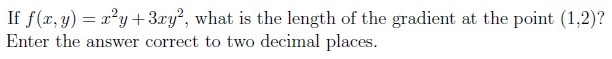
Q11SA3 marks
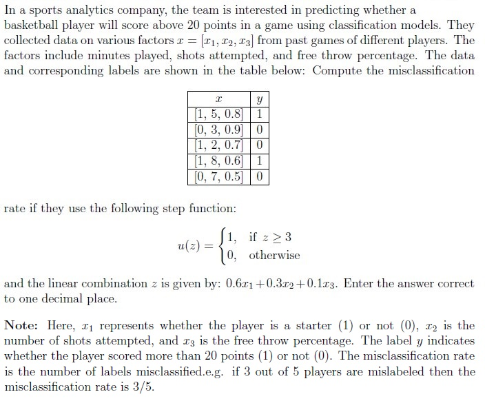
Q12MCQ2 marks
Consider a dataset from an e-commerce company such as Flipkart that has details of customer behavior, which of the following problems can be best approached using clustering?
Predicting the exact number of sales for each customer segment.
Classifying customers into segments based on labeled customer data.
Identifying inherent groupings in customer data without predefined labels.
Reducing the number of features in the customer dataset.